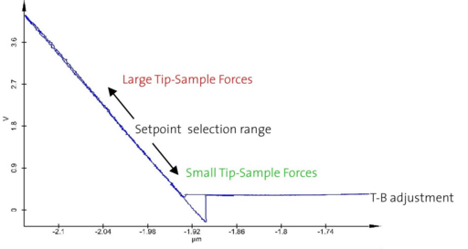

|
参数
|
按照 通用步骤中的步骤操作。接触模式的进一步调整（10.c）如下所述：
设点值
推荐的 设点值 为0.5 V。
AFM接触模式中的反馈参数是悬臂梁的弯曲，确保探针和样品之间的恒定力。扫描台的上下运动记录为表面形貌。悬臂梁恒定弯曲的任何偏差（在光电探测器上测量）在偏转图像中表示。这些图像突出显示不同形貌水平的边缘。
高设点值对应于高探针-样品相互作用力。
图1所示的力-距离曲线显示了初始T-B值以及接触模式测量应选择设点值的范围。反馈回路在所选的设点值处保持悬臂梁的恒定弯曲。

图1：典型的力-距离曲线，显示AFM接触模式测量的设点值选择。
记录的通道
图像扫描
AFM图像扫描中的每个数据对象创建两次，标记为[F]表示向前运动期间采集的数据，[B]表示向后运动期间采集的数据。
距离曲线
打开记录的数据通道将分别显示它们。若要获取记录时显示的视图，请使用 参数视图。
更多信息：